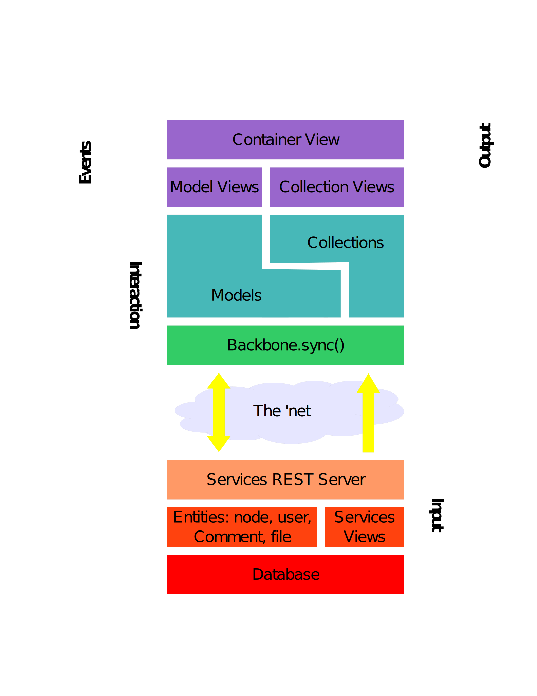
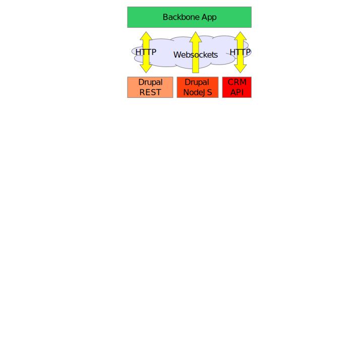

Drupal + Backbone.js @ DrupalCamp NYC
Table of Contents
1 Drupal + Backbone.js
Ethan Winn (ethanw) - _th_n - @eethann - ethan@echoditto.com
2 Why use a client-side framework?
2.1 Because today's JavaScript is complex:
- Browsers can do more.
- People expect more.
- HTML5 is a great/good/decent app platform.
2.2 Because of code like this:
$('.my-button').click( function() { var myParent = $(this).parent(); var myNid = $(myParent).data('nid'); var myTitle = $(myParent).find('input.title-input').val(); $.ajax({ type: 'post', url: '/service-endpoint/node/' + myNid + '.json', data: { title: myTitle }, success: function(data) { $(myParent).find('div.timestamp').html(data.modified); } }) } )
2.3 Notes notes
- DOM is slow
- Impossible to maintain
- Hard to read
2.4 Client-side JS Frameoworks Can Help:
- Store all data in JS objects, not the DOM.
- Separate Concerns: decouple data, behavior and presentation.
- Structure Complex Code: make it easy to find and extend functionality as apps grow.
2.4.1 Notes notes
- Separation of Concerns standard in MVC programming.
- JS code is growing more complex as browser JS engines get faster and more powerful.
- Prediction: there are going to be a lot more web applications in the near future.
2.5 What's so great about Backbone.js?
- Flexibility
- Extensibility
- Simplicity/Minimalism
- Great code
- Well-rchitected
- Healthy community
Because it's flexible, easily extensible and minimal. (It also has a great user base and is very popular.)
2.5.1 Notes notes
- Can be used with all sorts of backends: REST, Webkit, Facebook API
- Bareley even a "framework"
- Very easy to read source code, ~900 lines.
- Mainly structures code.
2.5.2 Other Options:
- Knockout.js
- Angularjs
- Spine
- Batman.js
- Ember.js
- Sproutcore
- Cappucino
- etc., etc.
2.5.3 Standards

(thanks XKCD: http://xkcd.com/927/)
2.5.4 Awesome Backbone.js examples
- DocumentCloud
- Linked-in's mobile site
- Recline.js
2.6 Why Drupal?
- Strcutred Data Back-end
- REST
- Awesome CMS + Web App engine!
2.6.1 Notes notes
- Drupal's actually a very good platform for buildng web app functionality: we need a structured data factory w/ REST backend.
- Drupal gives us a great CMS that can support full-scale web app functionality sections.
- Drupal + Backbone make a great pair.
3 Let's try that code again…
4 …with Backbone!
var MyAppNode = Drupal.Backbone.Models.Node.extend(); var MyAppNodeView = Drupal.Backbone.View.extend({ initialize: function() { this.bindAll('updateNode', 'updateNode'); this.model.bind('change', this.render, this); }, events: { 'click .my-button': saveNode, 'change input.title-input': updateNode }, updateNode: function(e) { this.model.set('title', e.target.val()); }, saveNode: function() { this.model.save(); } })
4.1 The Model
var MyType = Drupal.Backbone.Models.Node.extend();
4.1.1 Notes notes
- Backbone.extend() performs deep copy.
- Used for inheritence chain.
4.2 The Model: stores all data attributes of each object
myNode.set('property','value'); myNode.get('property');
4.3 The Model: loads & sends data to the server
this.model.save();
Backbone.sync();
4.3.1 Notes notes
- toJSON and parse methods
4.4 The Model: triggers events when data changes
this.model.bind('change', this.render, this); myNode.model.bind('change:title', AppView.toggleTitleStatus);
4.5 The View
4.5.1 The View: Renders Models to HTML
Backbone.View.render()is "agnostic": a no-op by default, can render however we want.- Drupal Backbone (and most other apps) use a client-side templating language: Handlebars or Mustache with {ctemplate} style vars.
4.5.2 The View: Binds Browser Events to Methods
Easy event binding using the jQuery .delegate() format:
events: {
'click .my-button': saveNode,
'change input.title-input': updateNode
}
5 Other Goodies
5.1 Collections
Collections hold groups of nodes. Perfect for:
- Views
- Search Results
- Node/Entity References
5.1.1 Notes notes
- Events bubble-up from collection models
- can load/save collection models all-together
5.2 Backbone.Router
Map URL fragments to JS application states. Uses the History API.
5.3 Underscore
Awesome functional programming tools for JS:
_.each()_.filter()_.pluck()_.reduce()_.template()
5.3.1 Notes notes
- Template is ERB-style, not great but omni-present.
- _.bind
6 Backbone.js Resources
- BackboneJS.org
- Backbone Annoted Source Code
- Addy Osmani's Backbone Fundamentals book (github)
7 Drupal Backbone

7.1 Notes notes
Transition to talking about Drupal Backbone
7.2 Drupal Backbone Models
- Nodes, Comments, Users, Terms, ready to go.
- Configure Services REST API endpoints.
- Perform some basic parsing.
- In progress:
- EntityReference parsing to nested models.
- Automatic content-type node model generator.
7.3 Drupal Backbone Collections
- Views, Search and Index collections.
- Nest Node models, you can override.
7.4 Drupal.Backbone.Views.Base
- Opinionated:
- Loads templates from HTML script content
- renders with _.template or Handlebars
- Templates managed by the theme layer
- Great w/ i18n/locale
7.5 The Backbone Base Feature
- Configures a REST endpoint via Services
- Enables most commonly required modules (which can be downloaded via backbone-dev.make.inc).
7.5.1 Notes notes
- Services vs. RestWS vs. Services Views vs. Views Datasource vs. …
8 Anatomy of a Drupal Backbone App Module
8.1 Simple Page Callback
function backbone_example_admin_page() { // Add templates to page. backbone_add_template('backbone-example-node-template', theme('backbone_example_node_template')); backbone_add_template('backbone-example-app-template', theme('backbone_example_app_template')); // Add app js. drupal_add_js(drupal_get_path('module', 'backbone_example') . '/js/backbone_example_app.js'); // Return a container div for the app to anchor itself to. return array( '#type' => 'html_tag', '#tag' => 'div', '#attributes' => array( 'id' => 'backbone-example-app', ), ); }
8.2 Example .js file
(from the backbone example module included in the Backbone project).
8.3 Attach using a behavior
(function($) { Drupal.behaviors.backbone_example = { attach: function() { var NodeView = Drupal.Backbone.View.extend({/*...*/}); var AppView = Drupal.Backbone.View.extend({/*...*/}); // ... } } })
8.4 Simple Node View
var NodeView = Drupal.Backbone.View.extend({ templateSelector: '#backbone-example-node-template', initialize: function(opts) { this.model = opts.model; this.model.bind('change', this.render, this); Drupal.Backbone.View.prototype.initialize.apply(this); } });
8.5 Top-level Application View
var AppView = Drupal.Backbone.View.extend({ templateSelector: '#backbone-example-app-template', initialize: function() { Drupal.Backbone.View.prototype.initialize.apply(this); _.bindAll(this, 'doLoadNode'); // SNIP... } }); var app = new AppView();
8.6 Bind App UI Events
var AppView = Drupal.Backbone.View.extend({ // SNIP... events: { 'submit form[name=backbone-example-form]': 'doLoadNode' }, doLoadNode: function() { var nid = this.$('#nid').val(); this.nodeModel.set('nid', nid); this.nodeModel.fetch(); } // SNIP... });
8.6.1 Backbone Recs notes
- For advanced apps, store models, views and collection definitions in container objects (.Views, .Models, etc.)
- One nice trick is to use a contructor function to populate your views object, and only return the App view, with the other views available to it via the closure.
8.7 "Promiscuous" Apps

8.8 Drupal Backbone Resources
- http://drupal.org/project/backbone doc links
- EchoDittoLabs.org Blog Posts
- Backbone Todos example sandbox on d.o
- DrupalCon Munich session!
9 Potential Applications
- Better administration tools
- Engaging UI's for doc-driven sites and apps
- In-place editing
- Node/Websocket integration
- What else?